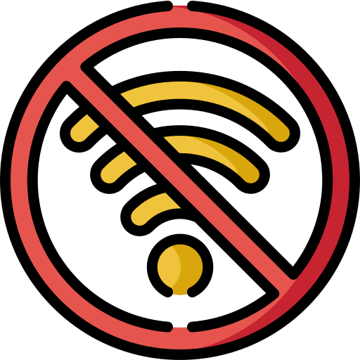

<ion-header>
  <ion-navbar>
    <div class="w100p disFlex">
      <div class="w50p pl15"> </div>
      <div class="w50p tr skipTxt"> </div>
    </div>
  </ion-navbar>
</ion-header>
<ion-content class="">
  <div *ngIf="!noInternet">
    <p style=" text-align: center;font-size: 24px;color: #649941;" *ngIf="chatNotFound">No Record Found.</p>
    <div class="" style="margin-top: 5px;">
      <div *ngIf="!chatNotFound">
        <div class="boxDiv" *ngFor="let item of chatList;let idx = index;">
          <div class="w100p disFlex" *ngIf="item.IsBlock == '0'">
            <div class="w20p tc">
              
            </div>
            <div class="w80p" (click)="joinChat(item.name,item.register_id)">
              <div class="w100p ">
                <p class="nameTxt fLato">{{item.name}}</p>
                <!-- <p class="timeTxt fLato">{{item.online_status}}</p> -->
              </div>
            </div>
          </div>
          <div style="opacity: 0.5;">
            <div class="w100p disFlex" (click)="presentConfirmUnBlock(item.name,item.register_id)"
              *ngIf="item.IsBlock == '1'">
              <div class="w20p tc">
                
              </div>
              <div class="w80p">
                <div class="w100p ">
                  <p class="nameTxtblock fLato">{{item.name}}</p>
                  <p class="blockTxt">Blocked. Tap to Unblock</p>
                </div>
              </div>
            </div>
          </div>
        </div>
      </div>
    </div>
  </div>
  <div *ngIf="noInternet" style="width: 100%;text-align: center; margin-top: 40%;">
    
    <p style="margin: 0px; text-align: center;    margin-bottom: 20px;margin-top: 20px;"> No Internet connection !</p>
    <button ion-button full class="tryBtn fExo" type="submit" (click)="getAllUserDetails()">TRY AGAIN</button>
  </div>

</ion-content>
<div class="msgText" *ngIf="exitText">
  <p class="copyP">Press again to exit</p>
</div>